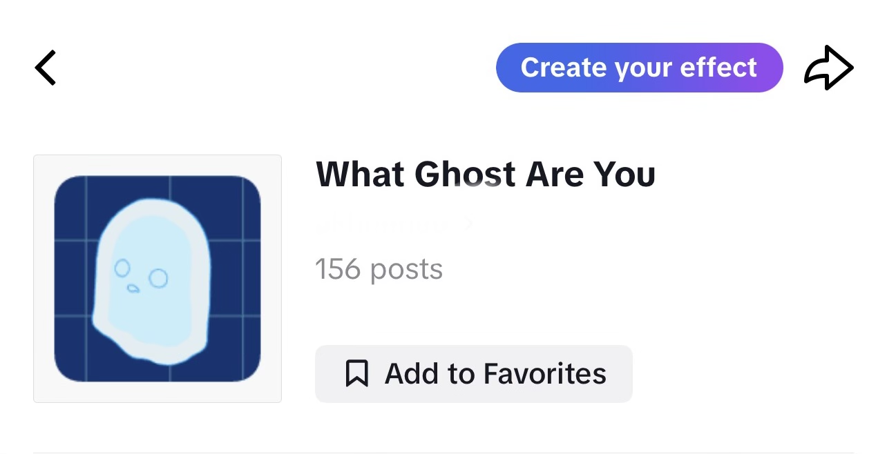
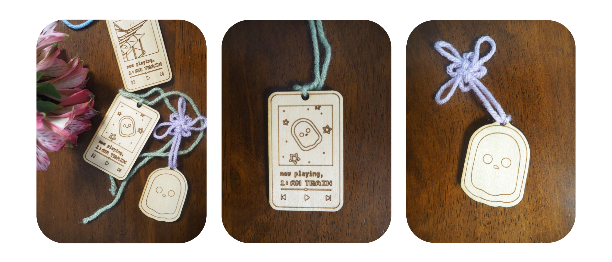
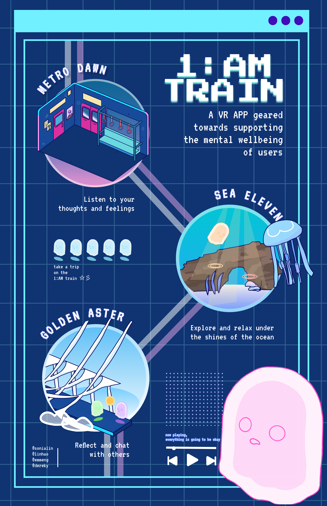

OVERVIEW
1:AM Train is an immersive reimagination in VR of a project I did in my prior year, called Midnight Train. Building upon the foundation of Midnight Train, 1:AM Train takes users on a journey as a ghost, riding on a subway train in infinite space. Utilizing the spatial freedom offered by VR, we have incorporated interactive stations where users can both physically and mentally engage with the wellbeing experiences.
AWARD
We were a grand prize winner as the first-place team among 30 participating teams by presenting our project to a student showcase at the XR Summit, a yearly XR conference hosted by the University of Michigan.
MY ROLE
- VR Interactions - I coded multiple VR interactions including player bounds/teleportation, haptic feedback, and visual and sound feedback.
- Project Manager - I was our teams leader and engaged in project planning, meeting coordination, risk and scope management, and task allotment.
- Shader Graph/Materials - I learned how to use shadergraph and created 80% of the shaders used( eg. gradient skybox, moving textures).
- 3D Modeling - I modeled and optimized 80% of the 3D models used in this application, enhancing the visual appeal of the VR environment
- UI/UX - I designed 50% of all UI/UX interactions to create a distinctive, intuitive, and enjoyable user experience.
- VR Environment - I setup all enviroments.
- 2D Images - All 2D artwork and presentation material were designed and drawn by me.
DEVELOPMENT STACK
- Unity
- Open XR for Meta Quest 2/ Rift S compatability
- Blender for 98% of models
- Figma
- Adobe Photoshop for handpainted materials + marketing materials
- Rhino for building models
- TikTok Effect House for filter challenge
DETAILS
Metro Dawn
When the user first enters our application, they will be greeted by the conductor, where they receive a ticket to aboard our train. The conductor suggests to the user to take a moment to slow down from the fast pace of life, setting the tone for our application. Users will arrive at the home station, Metro Dawn. From here, the user can get on the train and travel to the different stations by clicking on the subway map. On the train, the user has access to the hand menu they can access from tapping their virtual watch. In this menu, many different features such as daily mood tracker, journal, help, settings, and exit appear. Our journal feature allows them to record themselves expressing their thoughts and feelings for the day, and just let out whatever is on their mind. If users are unsure, they can click the prompt button to generate a random prompt to talk about. Users also have the opportunity to relax by sitting on the train's benches and observing the drifting clouds and shooting stars as they pass by.
Sea Eleven
The second stop in this journey is the underwater scene where users have the opportunity to unwind and alleviate stress by swimming leisurely while savoring the tropical scenery. Users physically need to make swimming motions to travel around compared to the main method of movement teleporting in other stops. Here also users can also engage with various marine life and plants to receive sensory feedback. Interactions with marine life provide haptic feedback, while interactions with plants yield distinct visual and auditory responses.
Golden Aster
At our last stop, you'll find a chat zone that allows users to engage in anonymous conversations with other online users. While our current prototype doesn't support multiplayer functionality due to our tight development schedule, we've included an interaction here that enables users to make wishes and engage in self-reflection beneath the open sky. The ground's reflective surface is intended to transport users into a headspace that encourages introspection and contemplation.
Full Gameplay
MARKETING
To boost the visibility of this project, I devised a set of strategies. First, I created and designed a set of slides from scratch highlighting its unique features as well as pitching a business proposal. Next, I developed a TikTok filter using TikTok Effect House known as the "What Ghost You Are Challenge," emulating a trending TikTok pattern. Over 150 videos were published with people trying it out. Additionally, I proposed the creation and designed wooden keychain merchandise for the audience to cherish, enhancing the project's memorability. Finally, I constructed an eye-catching poster for display at various showcase events.
Check out our slide deck where we talk more it's value proposition and about expanding this as a business!

Lasercut Keychains
Advertisement Poster
